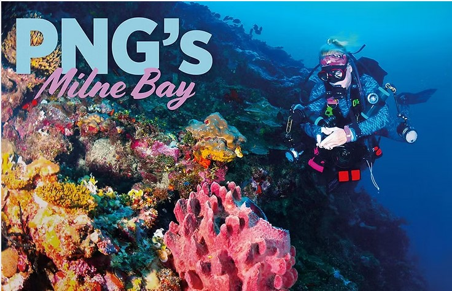
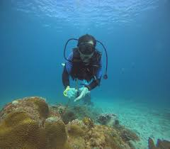
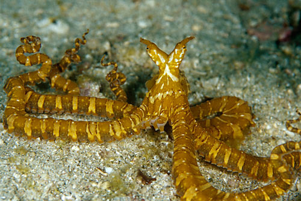
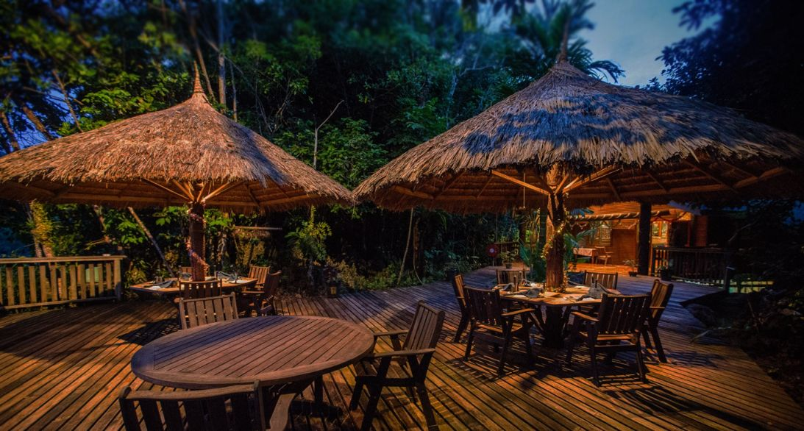

Before there was Lembeh Strait, before there was Anilao, there was Milne Bay. This remote province at the southeastern tip of Papua New Guinea is the birthplace of muck diving—the original destination that showed the world that black volcanic sand could hold more treasures than any coral reef. It was here, in the nutrient-rich waters of Milne Bay, that the concept of critter hunting was born, and where underwater photographers first discovered that the world's rarest and most bizarre marine creatures prefer the humble muck to the glamour of the reef.
For discerning divers and macro photography enthusiasts, Milne Bay represents sacred ground. The same black sand bottoms that early divers once dismissed as barren are now recognized as some of the richest habitats on Earth, home to species found nowhere else—or rarely seen anywhere else. From the legendary mimic octopus to the elusive flamboyant cuttlefish, from psychedelic frogfish to pygmy seahorses, Milne Bay remains the ultimate destination for those who seek the rare, the strange, and the spectacular.
The Birthplace of Muck Diving
Milne Bay is where the world first discovered that muck diving could rival coral reefs for biodiversity and photographic opportunities. Book your premium critter hunting experience today.
What is Muck Diving?
Muck diving is the art of exploring soft-bottom substrates—volcanic sand, silt, rubble—that were once overlooked by divers in favor of vibrant coral reefs. In these seemingly barren environments, a fascinating community of creatures thrives, many of which have evolved extraordinary adaptations for camouflage, hunting, and survival. The term "muck diving" was coined here in Milne Bay in the 1990s, and the destination quickly became legendary among the small community of underwater photographers and critter hunters who recognized its unique potential.
What makes muck diving so compelling is the combination of rarity and challenge. The creatures found in Milne Bay are often masters of camouflage, requiring sharp eyes and patient searching to spot. The reward, when found, is among the most satisfying experiences in diving—and the photographs captured are some of the most prized in underwater photography.
Milne Bay: The Original Muck Diving Destination

Milne Bay's muck diving sites are legendary for good reason. The combination of nutrient-rich waters, volcanic geology, and exceptional biodiversity creates an environment where rare creatures thrive. The bay's protected waters offer year-round diving, with conditions that range from calm and easy to challenging—but always rewarding for those seeking premium underwater experiences.
Premier Muck Diving Sites in Milne Bay
B&B (Bibita & Bulari) – The original muck dive site, the one that started it all. This shallow, protected site has been producing world-class critter encounters for decades. Here divers find multiple species of frogfish, octopus, seahorses, and an incredible array of nudibranchs. It is also one of the best places in the world to find the elusive mimic octopus.
Deacon's Reef – A classic muck site that transitions from sandy bottom to coral rubble. Known for ghost pipefish, seahorses, and the occasional flamboyant cuttlefish. Excellent for macro photography, especially in the early morning hours.
Bob's Knob – A site that combines muck with coral bommies, offering the best of both worlds. Here divers find pygmy seahorses on the fan corals alongside rare flatworms and nudibranchs on the sandy patches.
Lauadi – A lesser-known site that rewards patient divers with encounters with hairy frogfish, wonderpus octopus, and an extraordinary variety of crustaceans.
Waga Waga – A deeper muck site known for larger critters, including various species of octopus, cuttlefish, and the spectacular blue-ringed octopus.
The Legendary Critters of Milne Bay

Milne Bay's muck sites are home to an extraordinary array of rare and unusual marine life. Here are the highlights that draw discerning divers from around the world:
Cephalopods
- Mimic Octopus – Discovered in Milne Bay in the 1990s, this incredible creature can impersonate up to 15 different marine species. Still one of the most sought-after critters in the world.
- Wonderpus Octopus – A close relative of the mimic, with striking long arms and remarkable color-changing abilities.
- Flamboyant Cuttlefish – A small, venomous species that "walks" across the sand on its arms. Its vibrant colors make it a favorite for photographers.
- Blue-ringed Octopus – Tiny but spectacular, with electric blue rings that appear when threatened.
- Various octopus species – Including coconut octopus, algae octopus, and day octopus.
Frogfish
- Hairy Frogfish – The iconic frogfish species, with "hairy" appendages that provide perfect camouflage.
- Painted Frogfish – A stunning species with intricate patterns and colors.
- Giant Frogfish – The largest of the frogfish, sometimes reaching over 30cm.
- Clown Frogfish – A smaller species with bold coloration.
- Warty Frogfish – The most common species, but always a thrill to find.
Seahorses and Pipefish
- Pygmy Seahorses – Multiple species found on the fan corals in Milne Bay, including the famous Bargibant's pygmy seahorse.
- Hippocampus denise – The smallest seahorse species in the world, discovered in Milne Bay.
- Various pipefish species – Including ornate ghost pipefish, robust ghost pipefish, and many others.
Nudibranchs and Flatworms
- Hundreds of nudibranch species – Milne Bay has one of the highest nudibranch diversities in the world.
- Flatworms – Including the spectacular Pseudobiceros bedfordi and numerous other species.
- Chromodorids – An incredible variety of these colorful sea slugs.
The Premium Diving Experience
A typical day of luxury muck diving in Milne Bay begins with an early morning departure. The best light for macro photography is in the early morning hours, and many critters are most active at dawn. Divers work with expert dive guides who have spent years honing their critter-spotting skills—guides who can spot a pygmy seahorse from 10 meters and know exactly where to find the resident mimic octopus.
Muck diving is slow diving. Divers move deliberately across the sandy bottom, guides pointing out tiny creatures that would be invisible to the untrained eye. Each dive can yield dozens of extraordinary encounters—from the spectacular to the bizarre, from the tiny to the well-camouflaged. This style of diving rewards patience and attention, and it proves addictive for serious underwater enthusiasts.
Most dives in Milne Bay are shallow, ranging from 5 to 25 meters, allowing for extended bottom times. This is ideal for photographers, who need time to compose shots and wait for subjects to cooperate. Nitrox is highly recommended, especially for photographers planning multiple dives per day.
Luxury Accommodation at Tawali Resort

The premier diving resort in Milne Bay is Tawali Resort, perched on a cliff overlooking the bay. Tawali has been the base for muck diving exploration since the beginning, and their dive guides are among the most experienced critter hunters in the world. The resort offers comfortable bungalow accommodation, excellent cuisine, and easy access to all the classic muck diving sites.
For the full Milne Bay experience, staying at Tawali is highly recommended—the resort's location provides spectacular views, and the ability to be on the water early gives divers the best chance of encountering the most elusive critters.
World-Class Macro Photography in Milne Bay
Milne Bay is a mecca for underwater macro photographers. The combination of abundant critters, clear water, and experienced guides makes it one of the best places in the world to build a portfolio of rare marine life. Many of the world's most celebrated underwater images have been taken in these waters.
For photographers, Milne Bay offers several advantages:
- Shallow depths – Most critters are found in 5-15 meters, allowing for long bottom times and natural light photography
- Experienced guides – Tawali's guides are trained to work with photographers, positioning subjects optimally while ensuring minimal disturbance
- Critter diversity – The range of subjects is unmatched, from tiny pygmy seahorses to larger cephalopods
- Repeat sightings – Many sites have resident creatures that are reliably found dive after dive
- Excellent visibility – While the "muck" itself is silty, the water clarity is generally excellent
Planning Your Premium Muck Diving Expedition
Premium Expedition Details
Best Time to Visit: Year-round diving with optimal conditions September-December and March-May
Water Temperature: 27-30°C (80-86°F)
Recommended Certification: Advanced Open Water with excellent buoyancy control
Photography: Macro lens (100mm/105mm) essential
Accommodation: Tawali Resort - cliffside bungalows with ocean views
Package Includes: Luxury accommodation, gourmet meals, expert guides, premium dive equipment, camera facilities
Book Your Luxury Muck Diving Experience
Secure your place at Tawali Resort for the ultimate critter hunting expedition. Limited availability for premium packages with expert photography guides.
Phone: +675 76769513
WhatsApp: +675 76769513
Email: info@bismarktouris.com
Conservation and Responsible Diving
The muck diving sites of Milne Bay are fragile environments. The same creatures that make these sites famous are easily disturbed by careless diving practices. Bismark Touris practices and encourages:
- Perfect buoyancy – Essential for avoiding damage to the bottom and its inhabitants
- No touching – Many creatures are venomous; all are stressed by contact
- Careful camera work – Avoid dragging strobes and arms across the bottom
- No specimen collecting – Leave everything where you find it
- Support for local conservation – Tawali Resort contributes to marine conservation in Milne Bay
The original muck diving pioneers who discovered these sites also established the principles of responsible critter hunting that are now practiced worldwide. By diving responsibly, you help ensure that Milne Bay's incredible biodiversity will be enjoyed by generations of divers to come.
Frequently Asked Questions About Premium Muck Diving
What is the best muck diving destination in the world?
Milne Bay in Papua New Guinea is widely recognized as the original and premier muck diving destination globally. It was here that the concept of critter hunting was born, and it remains one of the most biodiverse locations for macro photography and rare marine species encounters.
How much does a luxury muck diving package in Milne Bay cost?
Premium muck diving packages at Tawali Resort start from PGK 4,200 per person for a 7-night stay including 5 days of diving. Exclusive private guide packages and extended expeditions are available for serious photographers and critter hunters.
What rare marine species can I see muck diving in Milne Bay?
Milne Bay offers encounters with the legendary mimic octopus, wonderpus octopus, flamboyant cuttlefish, multiple frogfish species including the hairy frogfish, pygmy seahorses (including the world's smallest seahorse species), blue-ringed octopus, and hundreds of nudibranch species.
What equipment do I need for macro photography in Milne Bay?
For premium macro photography in Milne Bay, a 100mm or 105mm macro lens is essential. Strobes, a focus light, and excellent buoyancy control are also highly recommended. Tawali Resort offers camera tables, charging stations, and expert photography guidance.
When is the best time for muck diving in Milne Bay?
Milne Bay offers exceptional muck diving year-round, with optimal conditions from September to December and March to May. During these periods, visibility is excellent, water temperatures are warm (27-30°C), and critter activity is at its peak.
Bismark Touris specializes in premium diving experiences across Papua New Guinea. With exclusive partnerships at Tawali Resort and deep expertise in muck diving, the team offers discerning travelers access to the world's most extraordinary underwater encounters.